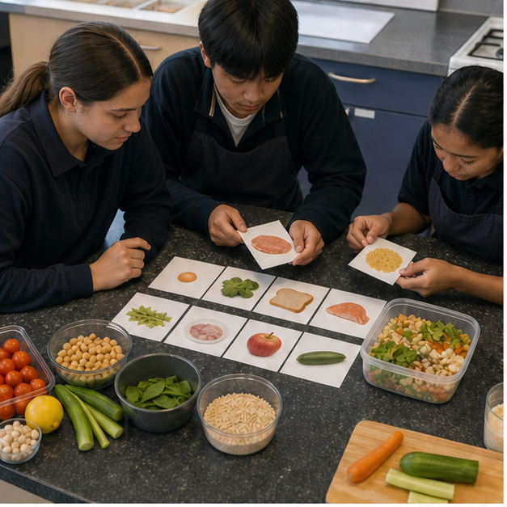
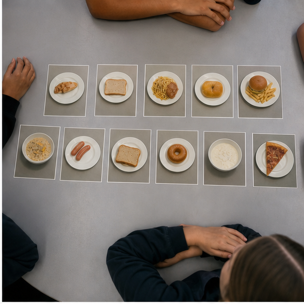
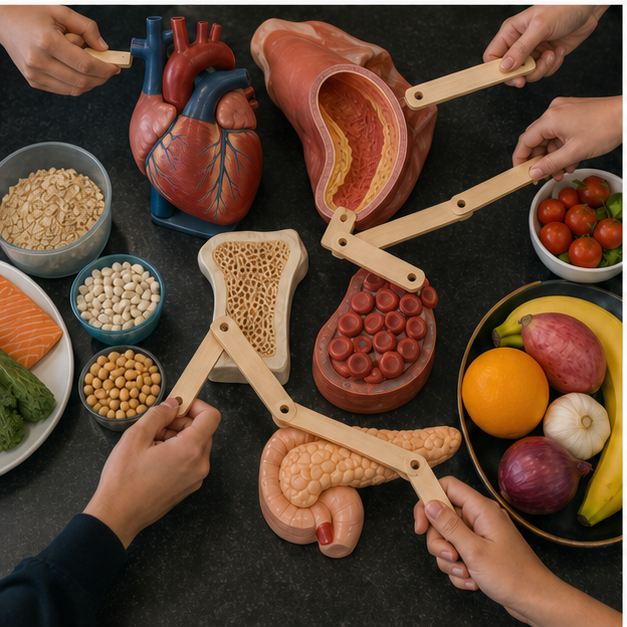
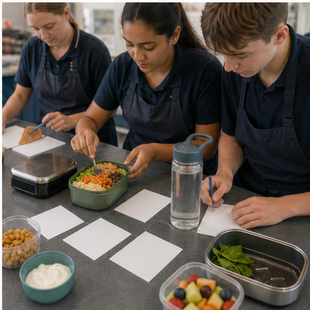

Class presentation
Module 6 — 8-slide lesson deck
Use the deck to introduce the three connected ideas, pause for decisions and hand evidence into the learning packages.

{kind=link}
Section 6.1
Under- and overnutrition
Learning intention: Explain undernutrition and overnutrition as forms of malnutrition that arise from patterns and circumstances, and evaluate support responses without judging or diagnosing individuals.
Success looks like
- I can distinguish insufficient energy, insufficient nutrients and excessive or imbalanced intake.
- I can explain how biological, social and environmental factors can interact over time.
- I can recommend a respectful, evidence-based support response within a student's role.
Malnutrition includes too little, too much and imbalance
Malnutrition describes a mismatch between what the body needs and what it receives or can use. Undernutrition can involve insufficient energy, protein or particular micronutrients. Overnutrition can involve a sustained excess of energy or particular food components, often alongside low intake of other useful nutrients. A person can therefore consume plenty of energy and still have an inadequate nutrient pattern. These are health concepts, not labels for a person's worth or effort.

One meal is not a long-term pattern
Health effects usually relate to patterns across time, not one celebration, skipped breakfast or takeaway meal. Bodies can adapt to short-term variation, and eating patterns naturally differ from day to day. Concern becomes more meaningful when intake is repeatedly inadequate, excessive or unbalanced and when other evidence is present. Students should describe the observed pattern and its possible mechanism rather than announce a diagnosis from a lunchbox, photograph or body shape.
Undernutrition has different pathways
Undernutrition may occur when there is not enough food, when available food lacks needed variety, when illness affects appetite or absorption, or when practical barriers make regular eating difficult. Food insecurity, high costs, transport, disasters, conflict, caring responsibilities and limited preparation facilities can all matter. The appropriate response depends on the cause: advice to simply eat more ignores access, illness and safety, while a single fortified product may not solve the wider problem.
Overnutrition is also a systems issue
Repeatedly receiving more energy or particular components than the body uses can contribute to health risk, but the pathway is influenced by genetics, sleep, medicines, stress, activity, product availability, portions, pricing and marketing. Overnutrition cannot be read reliably from appearance, and higher body weight does not reveal a person's complete diet, behaviour or health. Respectful analysis focuses on environments and patterns that can be changed, not blame or public body commentary.
Different forms can occur together
An eating pattern dominated by a narrow range of energy-dense products may provide ample kilojoules but too little fibre or some vitamins and minerals. This illustrates why energy balance and nutrient adequacy are related but not identical. Adding variety and improving access may address more than simply reducing or increasing portion size. Food selection should be evaluated across food groups, frequency, context and the person's confirmed needs.
Support begins with safety and respect
A student's role is to use reliable guidance, design inclusive food options, challenge stigma and seek appropriate adult or professional help when there is a concern. It is not to monitor classmates' bodies, prescribe diets or promise treatment. Useful system responses might include affordable varied choices, adequate meal time, drinking-water access and clear pathways to school wellbeing or health support. When eating or food access is causing distress, a trusted adult or qualified health professional is the right next step.
Equivalent pathway — no video required
Equivalent pathway: pattern, mechanism and context
Purpose prompt: For each case, distinguish what is observed, what mechanism is possible and what information would still be needed before drawing a conclusion.
Use the anonymous meal-card image to distinguish a repeated pattern from a judgement about one meal or a body. Apply the three fictional cases in Applied activity 6.1 using evidence → possible mechanism → context → respectful support, without diagnosing.
Learning package 6.10/10 + response
Use each explanation to repair your thinking as you go. All work saves only in this browser on this device.
Knowledge checks
Long response
Response scaffold
- State only the food-pattern and context evidence provided.
- Explain the possible energy or nutrient mechanism using cautious language.
- Identify at least three interacting biological, social or environmental factors.
- Propose one food-design response and one broader system support.
- State the limits of the evidence and where professional help would be appropriate.
Quality criteria
- Distinguishes energy, nutrients and pattern duration
- Uses cautious non-diagnostic language
- Explains interacting causes without blame
- Routes support safely and respects privacy
Folio handoff: Save the case mechanism map and respectful response under Folio > Nutrition patterns and support. Open My folio.
0/10 checks saved · long response still needs detail
Resume this packageSection 6.2
Nutrition-related conditions and prevention
Learning intention: Explain how food patterns can influence risk for selected nutrition-related conditions while recognising that causes are multiple, prevention reduces risk rather than guarantees an outcome, and diagnosis belongs to health professionals.
Success looks like
- I can explain one relevant mechanism for anaemia, cardiovascular disease, osteoporosis or type 2 diabetes.
- I can distinguish a modifiable risk or protective factor from a diagnosis or guarantee.
- I can communicate about body size and health without stigma or unsupported assumptions.
Risk is not destiny
A risk factor is something associated with a greater chance of an outcome; a protective factor is associated with lower risk. Neither is a guarantee. Genetics, age, medicines, infection, sleep, movement, smoking, health care, food access and eating patterns can interact. Nutrition education can explain mechanisms and support choices, but it must not imply that people caused a condition through bad behaviour or that one food can prevent or cure it.

Anaemia has more than one cause
Anaemia means the blood cannot carry oxygen as effectively as it should, often because there are too few healthy red blood cells or too little haemoglobin. Iron deficiency is one possible cause, and iron is needed to make haemoglobin, but blood loss, inherited conditions, illness and other nutrient deficiencies can also matter. Tiredness has many causes, so a student must not diagnose anaemia. Food sources and absorption can be discussed, while testing and treatment belong with health professionals.
Cardiovascular health develops across systems
Cardiovascular disease affects the heart and blood vessels. Risk is influenced by factors including age, family history, smoking, blood pressure, blood lipids, diabetes, movement and dietary patterns. Food patterns rich in varied plant foods and appropriate types and amounts of fats can support cardiovascular health, but they do not remove every risk. A food product should not be advertised as heart-protective merely because one ingredient has a positive reputation.
Bones respond to nutrition and use
Osteoporosis involves reduced bone strength and a greater chance of fracture. Building and maintaining bone involves calcium, vitamin D, protein, hormones, weight-bearing activity and other factors across life. Adolescence is an important period for bone development, yet one calcium-rich snack cannot guarantee prevention. Food designers can improve access to suitable calcium-containing choices and varied meals while respecting allergy, intolerance, vegan choices and medical guidance.
Type 2 diabetes involves glucose regulation
In type 2 diabetes, the body does not use insulin effectively and may not make enough to keep blood glucose within the intended range. Genetics, age, sleep, activity, medicines, food patterns and social conditions can contribute to risk. People with diabetes can eat varied enjoyable food; the condition is not evidence of personal failure. Students can examine balanced food patterns and product evidence, but diagnosis and individual management plans belong to qualified professionals.
Body size is not a classroom diagnosis
Higher body fat can be associated with increased risk for some conditions, but body size alone does not reveal a person's eating pattern, fitness, blood results, medical history or wellbeing. The term obesity is used clinically and in population research, not as an insult. A respectful class avoids public weighing, before-and-after imagery and comments about bodies. Prevention learning focuses on supportive environments, varied food patterns, movement, sleep and access, while recognising that health outcomes remain complex.
Prevention language must show limits
Good prevention wording uses phrases such as supports health, contributes to or can reduce risk. It identifies a mechanism and includes the wider pattern. For example, offering affordable calcium-containing foods can support bone health; it cannot promise that no user will develop osteoporosis. If symptoms, eating concerns or health questions arise, the safe action is to speak privately with a trusted adult and seek qualified health advice rather than self-diagnose from a website or quiz.
Equivalent pathway — no video required
Equivalent pathway: mechanism and risk-factor stations
Purpose prompt: For each condition, identify one mechanism, one modifiable factor, one non-modifiable factor and one claim that would overstate prevention.
Choose one body-system model visible in the image and state its normal role. Use the matching theory heading to build a mechanism–risk–protective-factor chain, then rewrite any absolute prevention claim using accurate reduce-risk language and a professional-help boundary.
Learning package 6.20/10 + response
Use each explanation to repair your thinking as you go. All work saves only in this browser on this device.
Knowledge checks
Long response
Response scaffold
- Describe the body system and what changes in the selected condition.
- Explain one nutrition-related mechanism accurately.
- Distinguish modifiable, non-modifiable and environmental factors.
- Propose an inclusive food-design or access response and justify it.
- Write a limitation statement and identify when professional advice is needed.
Quality criteria
- Mechanism is accurate and age appropriate
- Risk language avoids certainty and blame
- Design response is inclusive and evidence based
- Clinical and privacy boundaries are explicit
Folio handoff: Save the mechanism map, redesigned prevention claim and inclusive response under Folio > Nutrition-related conditions. Open My folio.
0/10 checks saved · long response still needs detail
Resume this packageSection 6.3
Australian guidance and the HelloEats challenge
Learning intention: Use Australian food guidance and label evidence to justify a responsible ready-to-eat meal concept within a clearly formative HelloEats design practice, while relying on the current teacher-issued notification for any formal task conditions.
Success looks like
- I can use the Australian Guide to Healthy Eating, a nutrition panel and an ingredient list for their different purposes.
- I can interpret the Health Star Rating as a comparison aid, not a complete judgement of a food or eating pattern.
- I can develop a draft HelloEats concept without inventing current assessment conditions or claiming submission.
Use each guidance tool for its proper job
The Australian Guide to Healthy Eating supports planning a varied pattern across five food groups and discretionary choices. A nutrition information panel provides standardised amounts of energy and selected nutrients for a product, while the ingredient list shows ingredients in descending order by ingoing weight and identifies required allergen information through the label system. These tools complement one another; none can describe a person's complete health or make the design decision alone.

Compare like with like
Nutrition panels usually provide per serve and per 100 g or 100 mL information. The per-100 measure can help compare similar products on a consistent basis, while the per-serve column helps interpret the amount someone may actually eat. Manufacturer serving sizes can differ, so comparing only the per-serve number may mislead. The best comparison also checks ingredients, allergens, purpose, food-group contribution, cost and the intended user.
Health Star Rating is one front-of-pack aid
The Health Star Rating system summarises selected nutrition information to help compare similar packaged foods. A higher star rating can be useful within an appropriate product category, but it does not measure every quality, cultural meaning, environmental effect or the whole eating pattern. Not every food carries a rating, and an unlabelled whole food is not therefore inferior. Students should use the rating alongside the full label and Australian guidance rather than as a universal league table.
Translate guidance into design features
A ready-to-eat meal concept can use guidance by including a useful mix of food groups, choosing ingredients for flavour and texture, comparing packaged components fairly and planning a safe portion and storage pathway. A balanced concept is not created by adding a token lettuce leaf or a health claim to the name. Each feature should answer the brief: who will eat it, when, where, how it will be held safely, what it costs and why it is likely to be accepted.
HelloEats is formative practice on this site
This website uses HelloEats as a classroom design context for investigating consumption patterns, analysing influences and proposing a safer, more nutritious food solution. It does not set dates, weighting, marks, submission methods or approved practical conditions. Use the current teacher-issued notification for any formal task requirements, and keep this site's locally saved practice evidence separate from submission.
Keep formative evidence separate from assessment
Students may develop a concept, source notes, label comparison, decision matrix and evaluation plan as formative learning evidence. Saving work in the website's local folio does not submit it to a teacher or prove practical performance. If a current assessment notification is later approved, the teacher will identify which evidence transfers, the required format and the authorised practical controls. Until then, the site must not display a due date, mark value or claim that the draft has been formally issued.
Build a transparent concept proposal
A strong draft proposal names the intended user and eating occasion, states criteria and constraints, shows how Australian guidance and product evidence informed the ingredient choices, identifies safety and allergen confirmation points, and explains cost, packaging and waste trade-offs. It also cites sources and distinguishes measured evidence from preference. The outcome is a reviewable concept, not a medical promise and not authorisation to cook a particular recipe without the teacher's confirmed practical plan.
Equivalent pathway — no video required
Equivalent pathway: guidance-to-design evidence walk
Purpose prompt: Identify which tool answers each design question and where a product score or label cannot decide for the designer.
Use the meal-prototype image to identify what can be measured or tested. Apply the evidence-role card and paired fictional label data in Applied activity 6.3, then state plainly that any dates, marks, submission method or practical conditions come only from the current teacher-issued notification.
Learning package 6.30/10 + response
Use each explanation to repair your thinking as you go. All work saves only in this browser on this device.
Knowledge checks
Long response
Response scaffold
- Define the fictional user, eating occasion, criteria and constraints without private health data.
- Use the Australian Guide to Healthy Eating to explain the intended food-group pattern.
- Compare two similar packaged components using per 100 g or mL, serves, ingredients and any Health Star Rating in context.
- Justify the concept's appeal, cost, portability, safety confirmation points and environmental trade-off.
- Add a current-notification check for practical controls and formal task conditions, then state what the local folio does and does not prove.
Quality criteria
- Uses each guidance and label tool for its correct purpose
- Design decisions respond to a clearly defined fictional user
- Safety, allergens and trade-offs are visible
- Draft, formative and formal-assessment states remain unmistakably separate
- No dates, marks, weighting or submission claims are invented
Folio handoff: Save the concept board, product comparison, source list and current-notification check under Folio > Draft HelloEats concept; label it formative learning evidence, not submission. Open My folio.
0/10 checks saved · long response still needs detail
Resume this packageEnd-of-module review
Check, repair and save
- Revisit Under- and overnutritionContinue
- Revisit Nutrition-related conditions and preventionContinue
- Revisit Australian guidance and the HelloEats challengeContinue
Open this module’s Applied Learning Activities · Open its media pathways · Keep selected evidence in My folio